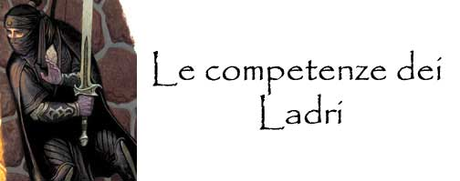
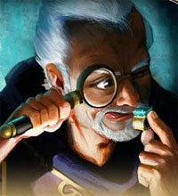

|
COMPETENZA |
TIPOLOGIA |
SLOT |
ABILITA' |
MOD |
|
Ambidexterity |
Ladri |
3 |
Destrezza |
0 |
|
Ambush |
Ladri |
1 |
Intelligenza |
0 |
|
Ancient History |
Ladri |
1 |
Intelligenza |
-1 |
|
Animal Noise |
Ladri |
1 |
Intelligenza |
-1 |
|
Appraising |
Ladri |
1 |
Intelligenza |
0 |
|
Bargain |
Ladri |
1 |
Carisma |
-1 |
|
Battle Lore |
Ladri |
1 |
Intelligenza |
0 |
|
Begging |
Ladri |
1 |
Carisma |
Spec. |
|
Blind-fighting |
Ladri |
2 |
NA |
NA |
|
Boating |
Ladri |
1 |
Saggezza |
+1 |
|
Body Language |
Ladri |
1 |
Intelligenza |
o |
|
Bribery |
Ladri |
1 |
Carisma |
Spec. |
|
Camouflage |
Ladri |
1 |
Intelligenza |
0 |
|
Camouflage |
Ladri |
1 |
Saggezza |
0 |
|
Commerce Illegal |
Ladri |
2 |
Intelligenza |
-1 |
|
Dirty Fighting |
Ladri |
1 |
Intelligenza |
0 |
|
Disguise |
Ladri |
1 |
Carisma |
-1 |
|
Endurance |
Ladri |
2 |
Costituzione |
0 |
|
Evasive Fighting |
Ladri |
1 |
Destrezza |
-3 |
|
Evasive Walking |
Ladri |
1 |
Destrezza |
-2 |
|
Fast-Talking |
Ladri |
1 |
Carisma |
Spec. |
|
Feign
Attack |
Ladri |
1 |
Intelligenza |
-1 |
|
Fine Balance |
Ladri |
2 |
Destrezza |
0 |
|
Foraging |
Ladri |
1 |
Intelligenza |
-2 |
|
Forgery |
Ladri |
1 |
Destrezza |
-1 |
|
Fortune Telling |
Ladri |
2 |
Carisma |
+2 |
|
Gaming |
Ladri |
1 |
Carisma |
0 |
|
Gem Cutting |
Ladri |
2 |
Destrezza |
0 |
|
Herbalism |
Ladri |
2 |
Intelligenza |
-2 |
|
Hunting |
Ladri |
1 |
Saggezza |
-1 |
|
Information Gathering |
Ladri |
1 |
Intelligenza |
Spec. |
|
Intimidation |
Ladri |
1 |
Forza |
Spec. |
|
Juggling |
Ladri |
1 |
Destrezza |
-1 |
|
Local History |
Ladri |
1 |
Carisma |
0 |
|
Locksmithing |
Ladri |
1 |
Destrezza |
0 |
|
Long Lasting Melody |
Ladri |
1 |
Costituzione |
-2 |
|
Looting |
Ladri |
1 |
Destrezza |
0 |
|
Musical Endurance |
Ladri |
2 |
Costituzione |
-3 |
|
Musical Instrument |
Ladri |
1 |
Destrezza |
-1 |
|
Navigation |
Ladri |
1 |
Intelligenza |
-2 |
|
Observation |
Ladri |
1 |
Intelligenza |
0 |
|
Pest Control |
Ladri |
1 |
Intelligenza |
-1 |
|
Quickness |
Ladri |
1 |
Destrezza |
-2 |
|
Rapid Arming |
Ladri |
1 |
Destrezza |
0 |
|
Reading Lips |
Ladri |
1 |
Intelligenza |
-2 |
|
Reading/Writing |
Ladri |
1 |
Intelligenza |
+1 |
|
Ritual Tattoos |
Ladri |
2 |
Destrezza |
Varia |
|
Set Snares |
Ladri |
1 |
Destrezza |
-1 |
|
Spell Mimicry |
Ladri |
2 |
Intelligenza |
0 |
|
Sprint |
Ladri |
1 |
Destrezza |
-2 |
|
Steady Hand |
Ladri |
2 |
Destrezza |
0 |
|
Street Sense |
Ladri |
2 |
Carisma |
0 |
|
Survival |
Ladri |
2 |
Intelligenza |
0 |
|
Tightrope Walking |
Ladri |
1 |
Destrezza |
0 |
|
Tracking |
Ladri |
2 |
Saggezza |
0 |
|
Trail Signs |
Ladri |
1 |
Intelligenza |
-1 |
|
Trailing |
Ladri |
1 |
Destrezza |
Spec. |
|
Tumbling |
Ladri |
1 |
Destrezza |
0 |
|
Venom Extracting |
Ladri |
1 |
Intelligenza |
Spec. |
|
Venom Handling |
Ladri |
1 |
Intelligenza |
-1 |
|
Ventriloquism |
Ladri |
1 |
Intelligenza |
-2 |
|
Voice Mimicry |
Ladri |
2 |
Carisma |
Spec. |
Ambidexterity
(3 slots)
Abilit�: Destrezza Modificatore:
0
Gruppo di classe:
Guerrieri, Ladri
Un personaggio con questa competenza � in grado di utilizzare i suoi due arti
superiori con uguale efficacia. Per tale motivo, quando costui combatte con due
armi riceve una penalit� di -2 al tiro per colpire su entrambe le armi (anzich�
della comune penalit� di -2 sull'arma principale e di -4 su quella secondaria).
Si noti che per utilizzare questa competenza non occorre effettuare alcuna prova
nella stessa. Deve osservarsi che questa competenza pu�
essere acquistata solo in sede di creazione del personaggio e mai
successivamente alla stessa.
Ambush
(1 slot)
Abilit�: Intelligenza
Modificatore: 0
Gruppo di classe:
Guerrieri, Ladri
Un personaggio con questa competenza � addestrato nel tendere imboscate ed
effettuare attacchi a sorpresa. Ogni volta che chi possiede quest�abilit�
obbliga un avversario ad una prova di sorpresa costui riceve una penalit� di �1
(senza che sia richiesta una prova in questa competenza). Questo beneficio si
applica solo quando tutti gli attaccanti sono dotati di tale competenza.
 |
Un�imboscata si verifica quando un gruppo di attaccanti, conoscendo e
sfruttando il terreno dello scontro, si organizzi nascondendosi al
nemico per cercare di sorprenderlo improvvisamente. Si noti che le
imboscate sono impossibili se gli attaccanti sono stati gi� visti dalle
loro vittime e vanno, dunque, preparate prima dell�arrivo di queste
ultime. Parimenti, l�imboscata fallir� automaticamente se i nemici hanno
modo di sospettare della concreta presenza degli attaccanti. Organizzare
un�imboscata richiede un intero turno di lavoro (nel quale il
personaggio deve poter camminare liberamente nella zona cercando ripari,
anfratti e altri nascondigli e deve poter dare ordini precisi a tutti
coloro prenderanno parte nell�imboscata) ed il superamento di una prova
nella competenza (ovviamente l�ambiente circostante deve rendere
possibile nascondere in modo efficace tutti gli attaccanti). Il
personaggio non deve conoscere precedentemente il risultato del suo
tiro, per tale motivo questo va posticipato al momento in cui
l�imboscata scatter�. Quando scatta l�imboscata, se il tiro nella
competenza � riuscito, gli attaccanti riceveranno un intero round
gratuito senza che i propri avversari (sorpresi dall�imboscata
perfettamente organizzata) possano reagire. Se il tiro � fallito,
invece, le vittime dovranno effettuare la regolare prova per evitare di
essere sorpresi. Chi � dotato della competenza alertness e sta per cadere in un�imboscata
ben organizzata (con prova riuscita) pu� effettuare una prova nella competenza
con un malus di �2. Se la prova riesce costui non perder� automaticamente
il round ma potr� effettuare il tiro sulla sorpresa senza usufruire, per�, del
bonus al tiro previsto dalla competenza alertness. Se, invece,
l�imboscata � stata organizzata male (fallimento della prova) la competenza
alertness potr� essere utilizzata normalmente. Si noti, infine, che non �
possibile effettuare imboscate nei confronti di creature dotati di sensi tali da
rendere impossibile, o quasi, che costoro vengano sorprese (si pensi ad es. ai
draghi). |
Una
creatura che sia riuscita a nascondersi con successo alla vista degli avversari
attraverso una propria diversa abilit�
(si pensi ad un vagabondo nascosto tra le ombre, ad una creatura invisibile o ad
una creatura mimetizzata) pu� utilizzare questa competenza direttamente senza
dover previamente effettuare la ricerca di un nascondiglio secondo le regole
precedentemente esposte.
Successo critico:
L�imboscata � riuscita ad opera d�arte, non solo gli avversari non potranno
reagire, ma nel round successivo dovranno effettuare una prova sulla sorpresa
per non perdere anche tale secondo round. Inoltre nega agli avversari la
possibilit� di utilizzare, esclusivamente nel primo round dell�imboscata, la
competenza alertness da costoro eventualmente posseduta.
Fallimento critico:
Il personaggio ha sbagliato totalmente a pianificare l�imboscata, i nemici in
avvicinamento si renderanno conto del pericolo e non potranno in nessun caso
essere sorpresi.
Appraising
(1 slot)
Abilit�: Intelligenza
Modificatore: 0
Gruppo di classe:
Ladri
|
 |
I personaggi che possiedono questa competenza sono in grado di stimare
il valore medio di mercato di oggetti preziosi, gemme ed oggetti d'arte.
In particolare il personaggio, superando una prova effettuata con
successo nella competenza sar� in grado di determinare se un oggetto �
originale, la purezza dei suoi materiali e la qualit� della manifattura.
Si noti che il personaggio � limitato ad una valutazione oggettiva dei
materiali e della fattura dell'oggetto non essendo in grado di venire a
conoscenza, utilizzando questa competenza, della storia particolare
dell'oggetto n� del valore che l'oggetto pu� avere soggettivamente per
alcune creature od organizzazioni (si pensi al valore affettivo dello
stesso). Al fine di effettuare la prova richiesta, il personaggio
necessita di poter manipolare l'oggetto senza limitazione impiegando per
ogni singola prova 1d10 round. Un personaggio che utilizza una lente di
ingrandimento (costo 100 g.p., peso 0,5 libbre) riceve un bonus di +2
alla prova nella competenza. Se il personaggio fallisce nella prova non
sar� in grado di determinare il valore dell'oggetto esaminato e non
potr� provare sullo stesso una nuova valutazione fino al raggiungimento
del successivo livello di esperienza. L'uso di questa competenza non
prevede effetti particolari (oltre al successo od al fallimento
automatico) in caso di tiri critici. |
Bargain (1 slot)
Abilit�: Carisma Modificatore: -1
Gruppo di classe: Ladri
Un personaggio con questa
competenza � pratico dell�arte del contrattare ai fini di fare scendere il
prezzo di un prodotto, costui cerca di individuarne anche i pi� insignificanti
difetti ed esasperarli pur di ottenere uno sconto. Il venditore, ovviamente,
risponder� evidenziando le qualit� evidenti del suo prodotto. Se il tiro sulla
abilit� ha esito positivo il personaggio ricever� uno sconto del 10%. Se,
invece, il personaggio sbaglia la prova le sue insistenze sortiranno solo
l'effetto opposto convincendo il venditore della estrema qualit� del suo
prodotto. Per tale motivo costui non lo vender� se non ad un prezzo maggiorato
del 10% (indipendentemente da chi sar� l'acquirente), inoltre ulteriori prove in
questa competenza, da chiunque effettuate, per l'acquisto di tale prodotto
saranno automaticamente inefficaci. Si noti che, questa competenza pu� essere
usata solo nelle trattative su un singolo prodotto, non su contratti di
fornitura e sempre che non vi sia un prezzo imposto dalla legge.
Successo critico:
Il personaggio convincer� il venditore ad applicare uno sconto del 20%.
Fallimento critico:
Le insistenze del personaggio sortiranno l'effetto opposto convincendo il
venditore della estrema qualit� del suo prodotto. Per tale motivo costui non lo
vender� se non ad un prezzo maggiorato del 20% (indipendentemente da chi sar�
l'acquirente), inoltre ulteriori prove in questa competenza, da chiunque
effettuate, per l'acquisto di tale prodotto saranno automaticamente inefficaci.
Battle Lore
(1 slot)
Abilit�: Intelligenza
Modificatore: 0
Gruppo di classe:
Guerrieri, Ladri
Un personaggio con questa competenza ha una certa familiarit� con le tecniche di
combattimento ed, in particolare, con l'utilizzo dei punti combattimento.
Orbene, questa competenza
pu� essere utilizzata, nella fase di attesa, per cercare di capire quale
tipologia di colpi di combattimento (speciali e generali) o manovre di
combattimento una creatura sta per utilizzare. Solo i colpi e le manovre di
combattimento che devono essere dichiarate all'inizio del round possono essere
riconosciuti tramite l'uso di questa competenza. Qualora, infatti, nella fase di
attesa, chi possiede questa competenza si rende conto che una creatura sta per
utilizzare punti combattimento o sta per porre in essere una determinata
manovra di combattimento costui potr� effettuare (sempre nella fase di attesa)
una prova in questa competenza (qualora siano pi� creature ad usare punti
combattimento sar�
necessario selezionarne una sola). Se la prova ha successo, chi possiede questa
competenza sar� a conoscenza degli specifici colpi di combattimento (speciali e
generali) o della particolare manovra di combattimento che la creatura sta per
effettuare, conoscendone anche i rispettivi effetti.
Dirty Fighting (1 slot)
Abilit�: Intelligenza Modificatore: 0
Gruppo di classe: Guerrieri, Ladri
Soldati veterani, picchiatori, guerrieri di professione sono consapevoli che una
mossa scorretta durante uno scontro pu� portare ad un vantaggio ed alla
vittoria. Chi conosce questa competenza, dunque, � in grado di usare tecniche di
combattimento scorrette (come ad es. tirare terra negli occhi degli avversari,
attaccare in zone sconvenienti, fingere di essere in difficolt�, ecc... ecc...).
Il personaggio pu� dichiarare di utilizzare questa tecnica sporca su un
qualsiasi suo attacco. Dovr� quindi effettuare la prova richiesta dall�abilit�,
se la prova ha successo sorprender� l�avversario e ricever� un bonus di
+1 al tiro per colpire e +1 ai danni sull�attacco prescelto. Una volta
utilizzata questa tecnica la vittima, tutti gli altri avversari presenti nel
corpo a corpo, e tutti coloro che hanno notato la manovra di combattimento,
sapranno di che pasta � fatta il personaggio e si comporteranno di conseguenza.
Per tale motivo il personaggio non potr� pi� utilizzare contro costoro questa
tecnica di combattimento (indipendentemente dal fatto che la prova in questa
competenza sia riuscita o fallita). Infine, questa abilit� non pu� essere
utilizzata contro altre creature che la posseggono e contro creature contro le
quali il personaggio non � in grado di effettuare manovre sporche poich�
combattono in maniera del tutto diversa dal solito o perch� sono immuni alle
stesse (si pensi ad una melma, ad una pianta, ad un costruito od ad un
fantasma). Si noti, infine, che il bonus ai danni sar� considerato in
ogni caso come se fosse un beneficio derivante dalla forza per i limiti del
massimale di danno previsto dall'uso delle armi.
Successo critico:
Il personaggio effettua una manovra che sorprende del tutto l�avversario,
ottenendo +2 al tiro per colpire ed ai danni con l�attacco prescelto.
Fallimento critico:
Il personaggio sbaglia completamente il proprio movimento ed ottiene una
penalit� di �4 al tiro per colpire con l�attacco prescelto.
Endurance (2 slots)
Abilit�: Costituzione Modificatore: 0
Gruppo di classe: Guerrieri, Ladri
Chi possiede questa
competenza pu� provare a resistere all�affaticamento durante il combattimento.
Una volta raggiunta la prima soglia di affaticamento costui potr� effettuare una
prova sulla competenza, se la prova riesce potr� disporre di 5 punti fatica
supplementari, altrimenti si sar� affaticato normalmente. Si noti che tale prova
non pu� effettuarsi nuovamente se non dopo un riposo completo del proprio corpo
(otto ore di riposo). Chi dispone di questa competenza, inoltre, ed effettua un
qualsiasi tiro salvezza per resistere ad un veleno od una malattia potr�
decidere (prima di effettuare il tiro salvezza) di utilizzare questa competenza
per ottenere, superando una prova nella stessa, un bonus di +1 al
relativo tiro salvezza.
Successo critico:
In caso di utilizzo della competenza per evitare l'affaticamento il personaggio
otterr� 7 punti fatica supplementari anzich� 5. In caso di utilizzo per
resistere a veleni o malattie il personaggio avr� automaticamente effettuato il
tiro salvezza.
Fallimento critico:
In caso di utilizzo della competenza per evitare l'affaticamento il personaggio
non solo non otterr� punti fatica ma subir� ulteriori 2 punti di affaticamento.
In caso di utilizzo per resistere a veleni o malattie il personaggio avr�
automaticamente fallito il tiro salvezza.
Evasive Fighting (1 slot)
Abilit�: Destrezza Modificatore: -3
Gruppo di classe: Guerrieri, Ladri
Chi conosce questa
competenza � in grado di compiere manovre evasive di combattimento. Ogni volta
che, spostandosi durante una battaglia (la competenza non si utilizza, quindi,
quando il personaggio riceve attacchi di opportunit� per motivi diversi
dall'essersi spostato dalla sua posizione di combattimento), il personaggio
dovrebbe subire un attacco di opportunit� costui potr� provare ad evitarlo
superando una prova nella competenza in questione. Con questa competenza possono
evitarsi anche molteplici attacchi alle spalle nello stesso round ma per
ogni attacco deve effettuarsi una separata prova nella competenza stessa.
Successo critico:
Il personaggio avr� evitato anche gli eventuali successivi attacchi alle spalle
che avrebbe dovuto subire senza che sia richiesta alcuna altra prova nella
competenza.
Fallimento critico:
Il personaggio, cercando di evitare gli attacchi alle proprie spalle, si scopre
maggiormente. Il singolo attacco che voleva evitare ricever� un ulteriore
bonus di +2 al tiro per colpire.
Feign Attack
(1 slot)
Abilit�: Intelligenza
Modificatore: -1
Gruppo di classe:
Guerrieri, Ladri
Un personaggio con questa competenza
riesce, dopo aver
studiato il suo avversario, a comprenderne i meccanismi di risposta in
battaglia. Costui, quindi, pu� decidere di mettere in atto una finta azione
d'attacco alla quale l�avversario risponde sempre allo stesso modo, riuscendo
quindi a far scoprire l�avversario al fine di portare contro di lui il vero
attacco (cd. "attacco di seconda intenzione") in maniera molto pi� efficace del
comune. In termini di gioco, quando un avversario attacca chi possiede questa
competenza utilizzando la medesima arma da corpo a corpo per almeno due round
consecutivi (non potendosi usare contro attacchi fisici, armi da lancio e da
tiro), a partire dal round immediatamente successivo (e fino a che l'avversario
continua a combattere con la stessa arma da corpo a corpo) colui che ha subito
gli attacchi potr� decidere, superando la prova di intelligenza prevista dalla
competenza, di effettuare la finta al fine di ottenere ad un suo singolo attacco
un bonus di +2 alla thac0. La prova dovr� essere effettuata immediatamente prima
del tiro per colpire al quale il personaggio vuole applicare il bonus. Si noti
che il bonus sar� valido sempre e comunque contro un unico avversario anche
qualora il personaggio riesca a colpire con l'attacco ulteriori bersagli (ad
esempio attraverso il colpo speciale di combattimento fendente frontale).
Se la prova fallisce l'attacco sar� portato normalmente senza alcun bonus o
penalit�. Basandosi
sull'effetto sorpresa della finta,
questa abilit� pu� essere utilizzata solo una volta in ogni combattimento e se
utilizzata in un melee
dove sono presenti pi� nemici, una volta usata contro uno di questi non
potr� essere utilizzata nei confronti di tutti gli altri.
Successo critico:
Il personaggio effettua una finta da manuale ed
ottiene un bonus di +4 alla Thac0 all'attacco portato utilizzando questa
competenza.
Fallimento critico:
Il personaggio erra totalmente la manovra di finta ed
ottiene una penalit� di -4 alla Thac0 all'attacco portato utilizzando questa
competenza.
Gem Cutting
(2 slot)
Abilit�: Destrezza
Modificatore: 0*
Gruppo di classe:
Ladri
Un personaggio con questa competenza conosce la tecnica utilizzabile per
estrarre gemme dalle cosiddette "pepite minerali", ossia da quei pezzi di roccia
che al loro interno contengono gemme preziose che necessitano l'opera di un fine
artigiano per essere estratte correttamente. Il lavoro richiesto per estrarre
tali gemme � pari a 10 giorni di lavoro per ogni libbra di peso della "pepita
minerale". Al termine dei dieci giorni il personaggio dovr� prima tirare il dado
corrispondente all'ammontare di gemme ritrovate nella singola libbra sulla quale
ha operato, dado che dipende dalla tipologia generale della gemma (1d6 per le
pietre ornamentali, 1d4 per le pietre preziose ed 1d2 per le gemme rare).
Successivamente, il personaggio dovr� effettuare una prova nella competenza per
ogni singola gemma estraibile alla prova si applicher� un modificatore
dipendente dalla tipologia generale: -1 per le pietre ornamentali, -2 per le
pietre preziose ed -3 per le gemme rare. Se la prova riesce il personaggio avr� estratto
la gemma con successo e potr� tirare sulle tabelle relative alla caratura ed
alla qualit�. Se la prova fallisce il personaggio non avr� ottenuto alcuna gemma
utile e potr� provare a recuperare le successive. Una seconda modalit� di
utilizzo di questa competenza � quella attraverso la quale, fermo restando la
caratura della gemma, il personaggio prova ad incrementare la qualit� di una
gemma precedentemente estratta (od in altro modo acquisita). Si noti che questa
procedura pu� essere effettuata una sola volta su ogni singola gemma. Il tempo
richiesto per tale operazione e la difficolt� della prova (che si cumula al
modificatore della competenza che dipende dalla tipologia generale della gemma) dipendono dalla pregressa qualit� della gemma
come indicato nella seguente tabella:
|
Qualit� originale della gemma |
Giorni di lavoro
richiesti |
Modificatore
supplementare |
|
Qualit� scadente |
1d3+1 |
Nessuno |
|
Qualit� comune |
1d6+1 |
-1 |
|
Qualit� buona |
2d6+3 |
-2 |
|
Qualit� eccellente |
3d6+2 |
-3 |
|
Qualit� favolosa |
Non possibile |
Non possibile |
Orbene, se la prova riesce la gemma si considerer� direttamente di una qualit�
superiore rispetto a quella originaria. Se, invece, la prova fallisce la qualit�
della gemma si considerer� di un livello qualitativo inferiore rispetto a quello
originario (fino al limite di una gemma di qualit� scadente).
Successo critico:
Il personaggio ottiene un bonus di +10 al primo tiro relativo alla caratura
della gemma estratta (non ai tiri effettuati quindi sulle tabelle successive) e
di +15 al tiro relativo alla qualit� della stessa. Nel caso di operazione volta
a migliorare la qualit� di una gemma gi� estratta la stessa si considerer�
direttamente di qualit� favolosa.
Fallimento critico:
Il personaggio non solo non sar� riuscito a recuperare la gemma ma avr�
compromesso tutte le eventuali e successive gemme presenti nella medesima libbra
della "pepita minerale". Nel caso di operazione volta a migliorare la qualit� di
una gemma gi� estratta la stessa si distrugger� nel corso dell'operazione.
Hunting (1 slot)
Abilit�: Saggezza Modificatore: -1
Gruppo di classe: Guerrieri, Ladri
I personaggi che posseggono
questa competenza sono esperti cacciatori ed hanno la capacit� di trovare le
loro prede. Questa competenza pu� essere utilizzata sono in zone ove sia
possibile cacciare (boschi, foreste, montagne, pianure). Il Dungeon Master pu�
applicare una penalit� da -1 a -5 alla prova nella competenza qualora il
personaggio provi ad utilizzarla in zone od in periodi temporali nei quali � pi�
difficile cacciare. Per utilizzare questa competenza il personaggio deve
impiegare un'intera giornata lasciando, all'alba, il proprio campo base ed
addentrandosi nella zona di caccia. Il personaggio setaccer� la zona di caccia
allontanandosi fino a mezza giornata di cammino per poi far ritorno al tramonto
al campo. Potr�, quindi, effettuare una prova nella competenza, se la prova
riesce il cacciatore avr� incontrato, durante la giornata di perlustrazione, una
preda. Si tratter�, in ogni caso, di un incontro animale di piccola o grossa
taglia (ad esclusione dei serpenti) determinato, assieme al tempo ed alle
modalit� di incontro, sulla tabella degli incontri oppure scelte dal Dungeon
Master. Se il personaggio caccia con altre creature che possiedono la competenza
solo il personaggio con la prova migliore effettuer� il tiro ricevendo un bonus
di +1 per ogni altro cacciatore presente che riesce nella prova sulla competenza
(fino ad un bonus massimo di +4). Per ogni creatura sprovvista della competenza
che accompagna il cacciatore, invece, costui ricever� una penalit� di -2 alla
prova. Si tenga presente che il cacciatore che ha effettuato la prova con
successo avr� anche avvistato per primo la sua preda. Questa competenza non pu�
essere utilizzata in caso di viaggio richiedendo che il cacciatore setacci la
zona di caccia badando alle prede senza scegliere previamente il percorso da
effettuare. Si noti, infine, che questo tiro non sostituisce i normali tiri per
gli incontri erranti che saranno effettuati regolarmente durante la giornata di
caccia.
Successo critico:
Il personaggio effettua una manovra di caccia che sorprende del tutto la propria
preda potendosi considerare la stessa vittima di un'imboscata.
Fallimento critico:
Il personaggio sbaglia totalmente a riconoscere le tracce delle proprie prede e
per errore seguir� senza saperlo una diversa creatura. Si determini quindi un
normale incontro errante effettuato dal personaggio considerando che l'incontro
avr� visto per primo il sopraggiungere del personaggio.
Intimidation
(1 slot)
Abilit�: Forza
Modificatore: Spec.
Gruppo di classe:
Ladri
Un personaggio con questa competenza � in grado di intimidire i soggetti che
incontra. Questa competenza pu� essere utilizzata solo nei confronti delle
creature intelligenti (dotate di intelligenza almeno pari a Low Intelligence)
che siano in grado di comprendere quello che il personaggio dice. Trattandosi di
un'intimidazione violenta, inoltre, occorre che il personaggio sia libero di
muoversi (un personaggio legato non pu� provare ad intimidire) e possa,
astrattamente, andare in contatto con la propria vittima (non pu� essere
intimidita una creatura che si trovi oltre una porta). Parimenti non possono
essere intimidite creature gi� soggette all'arbitrio del personaggio (si pensi
ad un prigioniero legato gi� in balia del personaggio). Utilizzare quest'abilit�
corrisponde ad un'azione complessa che pu� essere posta in essere nei confronti
di una o pi� creature si trovino entro 12 metri di distanza dal personaggio. Il
personaggio non pu� intimidire creature aventi un ammontare di dadi vita/livelli
superiori al proprio livello di esperienza.
- Il personaggio otterr�
alla prova un bonus/malus pari al modificatore di
reaction
adjustment
applicabile per il punteggio di carisma posseduto.
- Se il personaggio non dispone di armi costui ottiene un malus di +2 alla prova
(+4 se almeno una delle vittime � armata).
- Per ogni creatura oltre la prima che il personaggio vuole intimidire costui
riceve una penalit� di +1 alla prova.
- Se la vittima si trova in uno stato fisico (inteso come stadio delle ferite
riportate, ossia ferito leggermente, ferito gravemente, ecc...) peggiore
rispetto a quello in cui si trova il personaggio che prova ad intimidire costui
riceve una bonus di +2 alla prova, viceversa costui ricever� un malus di -1 alla
prova.
- Se il personaggio prova ad intimidire soggetti aventi compiti di sicurezza
(guardie, sentinelle, ecc...) costui riceve un malus di +2 alla prova.
- Il personaggio otterr� alla prova un bonus/malus dipendente dal rapporto tra i
dadi vita/livelli della vittima e la met� (per eccesso) del proprio livello di
esperienza. In particolare per ogni livello di differenza in cui costui risulta
superiore otterr� un bonus di -1 alla prova e viceversa. Si noti che qualora il
personaggio provi ad intimidire pi� di una creatura dovr� effettuare un unico
tiro applicando il modificatore della creatura pi� forte. Se ad esempio un
personaggio di 9� livello (che conta 5 livelli) prova ad intimidire un bugbear
da 3 dadi vita costui ricever� un bonus di -2 alla prova nella competenza.
Orbene, se la prova fallisce le vittime non saranno
intimidite e potranno agire di conseguenza. Il personaggio non potr� provare ad
intimidirle nuovamente fino a che non superi un nuovo livello di esperienza. Se
la prova, invece, riesce la creatura (o le creature) dovr� effettuare un tiro
salvezza puro su coraggio (senza poter effettuare alcuna prova di morale). Le
creature che superano il tiro salvezza non saranno intimidite ma potranno subire
un nuovo tentativo di intimidazione da parte del personaggio una volta trascorse
24 ore. Le creature che falliscono il tiro salvezza, invece, saranno intimidite
dal personaggio e faranno esattamente ci� che gli viene chiesto. Si noti, per�,
che queste creature agiscono per paura e non sono sotto controllo mentale del
personaggio. Le vittime, quindi, proveranno a mettersi al pi� presto al riparo
dal personaggio provando rancore nei suoi confronti per il sopruso subito e
quando si sentiranno al sicuro agiranno di conseguenza. Per tale motivo, il
personaggio ha maggiore sicurezza dell'operato delle creature intimidite fino a
quando le stesse resteranno nella sua sfera di controllo.
Successo critico:
Il personaggio ha intimidito cos� bene le creature da imporre loro una penalit�
di -10% al tiro salvezza su coraggio.
Fallimento critico:
Il personaggi non solo non ha intimidito le sue vittime, ma le stesse si
sentiranno rafforzate nel loro intendo di resistere all'aggressione ricevendo un
bonus di +1 a qualsiasi tiro per colpire effettuato nei confronti del
personaggio nelle successive 24 ore.
Long Lasting Melody (1 slot)
Abilit�: Costituzione Modificatore: -2
Gruppo di classe: Ladri
I cantori che conoscono
questa competenza sono stati addestrati a suonare ininterrottamente per un
periodo maggiore di tempo rispetto al normale. Per tale motivo, ogni volta che
il cantore suona una qualsiasi musica, costui potr� effettuare una prova in
questa competenza. Il cantore, per�, affaticher� non poco il proprio corpo in
questo modo e si stancher� per ogni tentativo per 1 punto fatica. Se il cantore
� gi� affaticato, inoltre, costui ricever� un malus supplementare alla
prova in questa competenza pari al livello di stanchezza raggiunto. Se la prova
in questa competenza ha successo la musica lanciata dal cantore sar�
considerata, ai soli fini della sua durata, come lanciata ad un livello
superiore rispetto a quello effettivamente raggiunto del cantore.
Successo critico:
La musica lanciata dal cantore sar� considerata, ai soli fini della sua durata,
come lanciata a due livelli superiori rispetto al livello di esperienza
effettivamente raggiunto del cantore.
Fallimento critico:
La musica lanciata dal cantore sar� considerata, ai soli fini della sua durata,
come lanciata ad 1d2 livelli inferiori rispetto al livello di esperienza
effettivamente raggiunto del cantore. Se per tale motivo la musica risulterebbe
lanciata ad un livello inferiore al primo il lancio della stessa risulter�
fallito ma il cantore avr� comunque perso i punti canto necessari a suonarla.
Musical Endurance (2 slots)
Abilit�: Costituzione Modificatore: -3
Gruppo di classe: Ladri
I cantori che conoscono
questa competenza sono stati addestrati a suonare pi� volte nella medesima
giornata. Per tale motivo, ogni volta che il cantore suona una qualsiasi musica,
costui potr� effettuare una prova in questa competenza. Ad ogni prova successiva
alla prima che il cantore effettua prima di riposarsi per almeno otto ore costui
ricever� una penalit� cumulativa crescente di -1 alla prova. Se la prova in questa
competenza ha successo il cantore avr� risparmiato 1 punto canto (se aveva
lanciato una melodia, quindi, non avr� speso alcun punto canto). Se la prova
fallisce il cantore non avr� risparmiato alcun punto canto e non potr�
riutilizzare questa competenza prima di essersi riposato per almeno otto ore. Si noti che,
per poter provare a lanciare una qualsiasi musica e quindi per poter provare a
risparmiare, il cantore dovr� comunque disporre inizialmente di tutti i punti
canto necessari al lancio della musica prescelta, ci� in quanto i personaggi
possono solo provare a risparmiare punti canto utilizzando questa
competenza senza poter provare a lanciare musiche per le quali non dispongono di
tutti i punti canto normalmente richiesti.
Successo critico:
Il cantore sar� riuscito a risparmiare fino a 2 punti canto utilizzati nel
lancio della musica prescelta.
Fallimento critico:
Il cantore non solo non sar� riuscito a risparmiare alcun punto canto ma avr�
speso 1 punto canto supplementare rispetto a quelli che aveva deciso di
utilizzare, in ogni caso la musica prescelta sar� comunque lanciata anche
qualora il cantore non disponga del punto canto supplementare richiesto.
Quickness (1
slot)
Abilit�: Destrezza Modificatore: -1
Gruppo di classe: Guerrieri, Ladri
Un personaggio con questa abilit� � in grado di effettuare con le proprie armi
colpi insolitamente veloci. La sua coordinazione occhio-mano � eccellente e pu�
sorprendere i suoi nemici prima che questi realizzano quanto lui �
effettivamente veloce nei movimenti. In combattimento, quando � utilizzata
l�abilit� e si � superata la prova prevista, si ottiene sul primo attacco un
bonus di �2 all�iniziativa ( fermo restando il limite in base al quale
nessun attacco o azione pu� avere un fattore iniziativa inferiore a +1). Si noti
che tale modificatore si applica solo all�iniziativa dell�attacco dell�arma e
non a quella del precedente movimento n� al fattore iniziativa di azioni diverse
dagli attacchi con le armi in corpo a corpo. Questa abilit� pu� essere
utilizzata solo una volta in ogni combattimento e se utilizzata in un melee
dove sono presenti pi� nemici, una volta usata contro uno di questi non
potr� essere utilizzata nei confronti di tutti gli altri. Infine, chi possiede
questa competenza pagher�, senza dover effettuare alcuna prova nella stessa, il
colpo speciale di combattimento �attacco extra� 2 punti combattimento in meno
del costo previsto.
Successo critico:
L�attacco risulter� effettuato in ogni caso con un fattore iniziativa pari a +1.
Fallimento critico:
L�attacco risulter� effettuato solo a fine del round (in ogni caso come primo
attacco di fine round).
Rapid Arming (1
slot)
Abilit�: Destrezza Modificatore: 0
Gruppo di classe: Guerrieri, Ladri
Questa
competenza permette di rinfoderare velocemente le proprie armi o il proprio
scudo, attivit� che normalmente si considera un'azione complessa comune, permettendo al personaggio di
compiere una qualsiasi altra azione nel corso del medesimo round. Per poter
utilizzare in tal modo la competenza � necessario dichiarare tale decisione
nella fase delle intenzioni. Se, infatti, la prova nella competenza riesce,
l'azione di mettere a posto le proprie armi diventa a tutti gli effetti una
free action
(link). Se la prova,
invece,
fallisce tale attivit� rester� un'azione comune complessa con l'unica differenza
che, essendo stata specificata gi� all'inizio del round, dovr� necessariamente
essere compiuta od abortita del personaggio il quale non potr� compiere altre
azioni complesse (o
free action)
nel medesimo round.
Se il personaggio vuole rimettere a posto un�arma impugnata a due mani, uno
scudo, o due armi la prova riceve una penalit� pari a -1, se si tratta, invece,
di un�arma e di uno scudo la prova riceve una penalit� di -2. Rinfoderare le
armi impone una penalit� al fattore iniziativa (indipendentemente dal fatto che
sia un'azione eseguita come azione complessa o come
free action) pari a
+1 per le armi
piccole, +2 per le armi medie, +3 per le armi grandi (+4 per le armi di
dimensioni maggiori), +1 per uno scudo piccolo, di +2 per uno scudo medio e di
+3 per uno scudo da corpo. Si noti che tali penalit� saranno cumulate tra loro
qualora la creatura desideri mettere a posto pi� di una singola arma o scudo.
La stessa competenza permette al personaggio di armarsi ed estrarre le proprie
armi velocemente. Per tale motivo il personaggio, senza che sia necessaria
alcuna prova nella competenza, trasforma l'azione di impugnare le armi (che sono
a portata) da una free action (link)
ad una non azione.
Questa competenza, inoltre, pu� essere utilizzata quando un personaggio che,
disponendo di attacchi multipli successivi non simultanei con un'arma, perda la
stessa (anche volontariamente, si pensi ad un'ipotesi di rottura, di arma caduta
o di volontario rilascio) prima di aver effettuato tutti gli attacchi del round.
In questo caso, qualora il personaggio disponga di una medesima arma pronta
all'uso potr�, superando una prova
nella competenza, estrarla e continuare ad effettuare gli attacchi mancanti.
Tale competenza, infine, pu� essere utilizzata, in alcune occasioni, per
sorprendere un avversario che non si aspetta di essere attaccato. Qualora,
infatti, il personaggio estrae le armi che aveva nel fodero superando una prova
nella competenza al fine di attaccare un avversario che non ha questa competenza
e che non si aspettava questo suo attacco, costui imporr� alla vittima malus di �3 al
tiro per la sorpresa (alla prova si applicano gli stessi modificatori previsti
per rinfoderare le proprie armi).
Successo critico:
Il personaggio effettua una manovra velocissima ottenendo un bonus di -1 al
successivo tiro per l�iniziativa (questo bonus sar� sottratto direttamente dal
dado lanciato venendo applicato in ogni caso, anche al lancio delle magie oppure
in caso di fattori di iniziativa gi� pari a +1).
Fallimento critico:
Il personaggio non solo perde tempo a rinfoderare le proprie armi
ma effettuando una manovra sbagliata le fa cadere a terra ai suoi piedi.
Sprint (1 slot)
Abilit�: Destrezza Modificatore: -2
Gruppo di classe: Guerrieri, Ladri
Il personaggio che
possiede questa competenza pu� cercare di aumentare il proprio movimento durante
ogni singolo round di combattimento utilizzando la propria agilit�. Se il
personaggio riesce in una prova nella competenza costui, infatti, potr� muoversi
nel round in corso di 3 metri supplementari rispetto a quelli che avrebbe
normalmente effettuato. Tale movimento supplementare potr� essere applicato sia
al proprio mezzo movimento prima di un attacco o di una diversa azione, sia al
termine di un movimento completo. Qualora il personaggio decida di aumentare il
proprio movimento camminando su terreni che normalmente lo rallentano costui
ricever� una penalit� alla prova da -1 a -4 a seconda di quanto � impervio il
terreno come stabilito dal Dungeon Master. Si noti, inoltre, che questa
competenza non pu� essere in alcun caso utilizzata qualora il personaggio abbia
penalit� al movimento dovute ad impedimenti diversi dal terreno sul quale vuole
muoversi (si pensi ed esempio ad effetti di incantesimi, a rallentamenti dovuti
a colpi speciali di combattimento od ad effetti di colpi critici).
Successo critico:
Il personaggio si sar� mosso con tanta agilit� da ricevere un bonus di -1
alla propria classe armatura per tutto il round in corso, questo beneficio si
considerer� a tutti gli effetti come un bonus dovuto alla destrezza del
personaggio.
Fallimento critico:
Il personaggio non solo non riuscir� ad aumentare il proprio movimento ma cadr�
al suolo (knockdown) dopo essersi mosso del suo normale fattore
movimento.
Survival
(2 slot)
Abilit�: Intelligenza
Modificatore: 0
Gruppo di classe:
Guerrieri, Ladri
Un personaggio con questa competenza conosce tecniche di sopravvivenza nelle
lande selvagge. In particolare, il personaggio � in grado di reperire piccole
quantit� di cibo e di acqua potabile usando tecniche di sopravvivenza. Per
questo motivo, senza che sia necessaria alcuna prova nella competenza, il
personaggio sar� in grado di sopravvivere senza altre provviste. Ovviamente il
cibo recuperato sar� di pessima qualit� (principalmente costituito da radici,
insetti, lumache, funghi e bacche selvatiche) ed appena sufficiente a sfamare la
sua persona. Manterr� il personaggio in vita ma non permetter� allo stesso di
recuperare le penalit� accumulate per gli stenti patiti in precedenza. Il
personaggio pu� decidere, per�, di dedicare un'intera giornata a recuperare
provviste alimentari commestibili ed acqua. In questo caso costui dovr�
effettuare una prova nella competenza. Se la prova fallisce il personaggio avr�
comunque trovato abbastanza cibo per sopravvivere personalmente (come su
menzionato). Se la prova riesce il personaggio, oltre ad aver recuperato cibo
per sostenere la sua persona avr� recuperato cibo per 1d3 razioni supplementari
(ogni razione � in grado di sfamare una creatura di taglia media per una
giornata). Anche queste razioni supplementari per la qualit� pessima degli
alimenti (tutti dal basso valore nutritivo) sono in grado di mantenere in vita
le creature che le assumano senza permettere di recuperare le penalit�
accumulate per gli stenti patiti in precedenza (indipendentemente dall'ammontare
di razioni consumate). Deve osservarsi che, in ogni caso, questa competenza non
pu� essere utilizzata in territori ostili alla vita quali deserti, zone artiche
ed in mezzo al mare.
Successo critico:
Il personaggio,
oltre ad aver recuperato cibo per sostenere la sua persona, avr� trovato
abbondanti risorse
alimentari (sempre di scarsissima qualit�) considerabili 1d2+3 razioni
supplementari
(ogni razione � in grado di sfamare una creatura di taglia media per una
giornata).
Fallimento critico:
Il personaggio non solo non sar� riuscito a recuperare alcuna razione ma non
sar� riuscito a recuperare abbastanza alimenti ed acqua per sfamare la sua
stessa persona.
Venom Handling
(1 slot)
Abilit�: Intelligenza
Modificatore: 0
Gruppo di classe:
Ladri
Chi possiede questa competenza � in grado di maneggiare veleni e sostanze
tossiche in relativa sicurezza. Confronta le regole sull'uso dei veleni (link).
Pu� cospargere efficacemente veleni sulle armi senza che sia richiesto alcun
prova nella competenza e non corre il rischio di avvelenarsi usando armi
avvelenate (in pratica se tira un acritico non significher� automaticamente che
si � avvelenato, ma � sempre possibile che si ferisca con la propria arma o
venga in contatto con il veleno accidentalmente). Conosce, inoltre, una tecnica
per conservare il veleno cosparso sulle armi coprendolo con cappucci speciali
che pu� preparare da solo. Un cappuccio per un proiettile costa 5 monete di
argento e pesa 0,1 lb., mentre per un'arma small costa 3 monete d'oro e pesa 0,2
lb. (questa tecnica non pu�
essere usata per le armi pi� grandi). La copertura deve avvenire subito dopo che
la sostanza tossica � stata applicata sull'arma (azione che richiede 1 ulteriore
round oltre a quello necessario a cospargere il veleno). Una volta coperto il
veleno pu� conservarsi a tempo indefinito fino a che non viene levata la
copertura. Da quel momento inizia a decorrere il tempo prima che il veleno perda
i suoi effetti, il veleno non pu� essere utilmente coperto e la copertura
vecchia non pu� essere riutilizzata. Sfoderare un'arma coperta non richiede
un'azione autonoma ma da a chi la usa una penalit� di +2 all'iniziativa. Infine,
chi possiede questa competenza, superando una prova di abilit�, pu� capire se
una creatura, un'arma od un oggetto, che pu� esaminare entro 9 metri di
distanza, per un intero round (� considerata azione), sia velenosa o cosparsa di
veleno. Allo stesso modo pu� anche verificare se alcune bevande o del cibo siano
stati avvelenati, ma in questo caso deve poter toccare ed annusare liberamente
le stesse. Se la prova fallisce non sar� in grado di riconoscere il veleno sulle
sostanze e sugli oggetti esaminati.